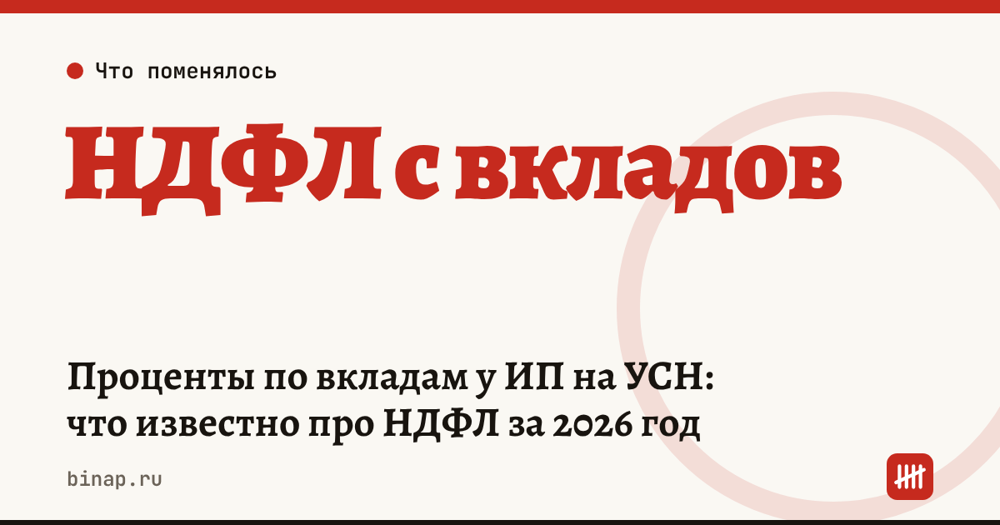

Проценты по вкладам у ИП на УСН: что известно про НДФЛ за 2026 год

Если вы ИП на упрощёнке, ЕСХН или АУСН и держите деньги на вкладе или на счёте с процентом на остаток, налог с этих процентов за 2026 год, по данным «Клерка», считается как НДФЛ физлица, а не как доход спецрежима. Налог начислит инспекция и пришлёт уведомление. Законопроект, который прямо исключает такие проценты из базы спецрежимов, пока принят только в первом чтении.
Коротко
- По данным «Клерка» (07.11.2026), с доходов за 2026 год все ИП независимо от режима платят НДФЛ с процентов по вкладам и остаткам на счетах в российских банках, налог — по уведомлению.
- Законопроект № 617-9, который исключает такие проценты из базы УСН, ЕСХН и АУСН, Госдума одобрила в первом чтении (по данным «Клерка»).
- ФНС объясняет расчёт для физлиц: налог платят только с процентов сверх необлагаемого минимума; минимум = 1 млн ₽ × наибольшая ключевая ставка ЦБ на 1-е число месяцев года.
- За 2025 год минимум — 210 000 ₽, налог по уведомлениям за 2025 год платят не позднее 1 декабря 2026 года (ФНС).
- Сейчас: выпишите проценты за 2026 год и уточните у бухгалтера, как их учитывать, пока закон не принят окончательно.
Сроки, изменения и разборы для ИП и самозанятых — каждое утро в Telegram и MAX. Подпишитесь, чтобы не пропустить.
Что меняется для ИП
Раньше проценты по депозиту ИП на УСН «доходы» нередко включали в доходы упрощёнки и платили с них 6%. По новому порядку, как его описывает «Клерк», проценты уходят из базы спецрежима и облагаются НДФЛ как у обычного физлица. Практических следствий два:
- налог придёт отдельным уведомлением, а не через декларацию по УСН;
- его считают по правилам НДФЛ с процентов — с необлагаемым минимумом, а не по ставке УСН.
Текст закона и законопроекта редакция не открывала — следите за статусом законопроекта № 617-9 на sozd.duma.gov.ru.
Как считают налог с процентов
Пример ФНС для физлица за 2025 год:
| Показатель | Сумма |
|---|---|
| Проценты за год | 225 381 ₽ |
| Необлагаемый минимум (1 млн ₽ × 21%) | 210 000 ₽ |
| Налоговая база | 15 381 ₽ |
| НДФЛ 13% | около 2 000 ₽ |
Для доходов 2026 года минимум будет другим: он зависит от наибольшей ключевой ставки на 1-е число каждого месяца 2026 года.
Пример для ИП (расчёт редакции, цифры условные): если наибольшая ставка за 2026 год окажется 16%, минимум составит 160 000 ₽. При процентах 200 000 ₽ база — 40 000 ₽, НДФЛ 13% — 5 200 ₽. Если бы те же проценты попали в доходы УСН 6%, налог был бы 12 000 ₽.
Где держать деньги бизнеса и резерв на налоги — расчётный счёт с процентом на остаток: ссылка
Что сделать сейчас
- Выпишите в банке или личном кабинете сумму процентов по вкладам и остаткам за 2026 год — она понадобится в начале 2027 года.
- Если вы раньше включали проценты в доходы УСН, уточните у бухгалтера или в инспекции, как показать их за 2026 год, пока законопроект не принят.
- Если ждёте уведомление по имущественным налогам и НДФЛ с процентов за 2025 год, оплатите его до 1 декабря 2026 года. Все сроки — в налоговом календаре ИП.
- Проверьте, сколько вы платите на своём режиме: сколько платит ИП на УСН 6% без сотрудников и УСН «доходы» или «доходы минус расходы».
Частые вопросы
Включать ли проценты по вкладам в доходы по УСН за 2026 год? По данным «Клерка», проценты облагаются НДФЛ, а законопроект № 617-9, который исключает их из базы спецрежимов, одобрен в первом чтении. До окончательного принятия уточните порядок у бухгалтера, чтобы не заплатить налог дважды.
Нужно ли ИП самому подавать декларацию по процентам? По данным «Клерка», налог рассчитают по уведомлению — так же, как у физлиц. Сумму процентов налоговая получает от банков.
До какого числа платить НДФЛ с процентов за 2025 год? Не позднее 1 декабря 2026 года — вместе с другими налогами по налоговому уведомлению (ФНС).